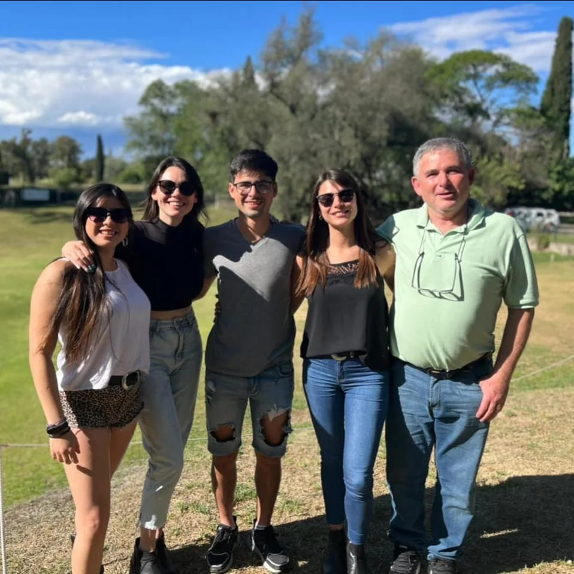
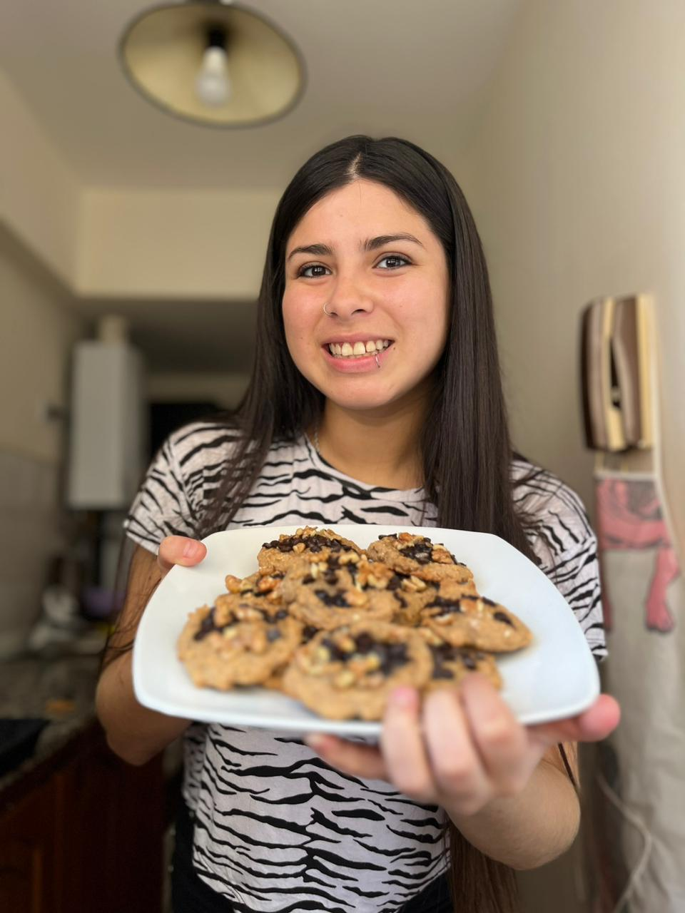

Galería de Fotos
Arbol Genealógico
Nueva Receta
RECETAS DE COCINA FAMILIA FRAIRE
Fraire se nace

Foto Familiar
Recetas de los Hermanitos
A continuación, una receta realizada por cada integrante de la Familia Fraire.
Juli Fraire alias Kiki
Tarta de Brocoli o Pastel de Brocoli
Ingredientes
Paso a Paso
Mati Fraire alias Juje
Sambuchito
Ingredientes
Paso a Paso
Barbi Fraire alias Bart
Ingredientes
Paso a Paso
